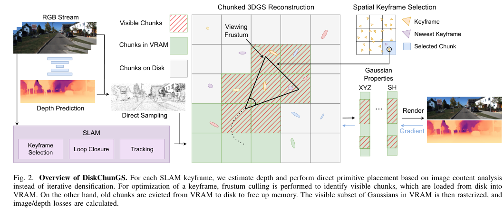
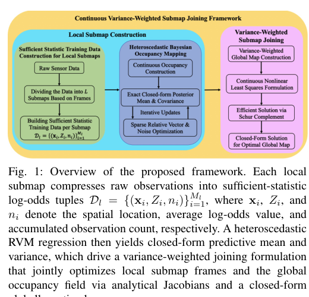
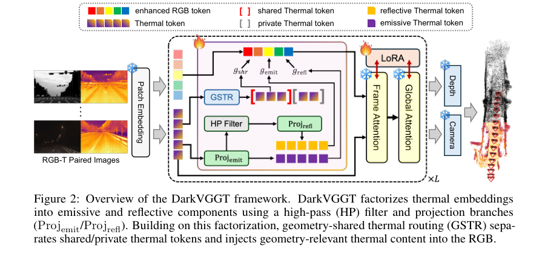

Executive Summary
本期最值得沉淀的变化不是又出现一个 3DGS SLAM，而是 3DGS SLAM 的瓶颈从“表示能力”转向“内存、I/O、ROS、Jetson 和长序列工程”。DiskChunGS 用空间 chunk、VRAM 活跃集和磁盘换入换出把 3DGS 地图扩展到 KITTI 全 11 段，论文和代码都能指向实际系统结构。这类工作对机器人更关键：漂亮渲染只有在不爆显存、不丢 tracking、可接 ROS 和边缘平台时才进入工程闭环。
Feed-forward 几何模型继续向真实传感条件补短板。DarkVGGT 把 VGGT 这一类 RGB 几何基础模型扩到 RGB-T，核心不是盲目融合热成像，而是把热信号拆成发射主导和反射残差，再只把几何共享的热 token 路由回 RGB 主干。它在低照度 depth/pose 上有清楚量化收益，同时用 daylight benchmark 检查是否伤害白天 RGB 能力。这是“多模态纠偏”而不是“端到端替代 SLAM”。
VIO、事件相机和多相机相对位姿仍然依赖硬几何。两篇 minimal solver 论文都把问题压回可在 RANSAC 里高频调用的代数求解：event asynchronous SfM 给出全 DoF 事件相机运动估计，multi-camera VIO solver 用 IMU 垂直方向或旋转轴先验把 4 点问题化成 6 次单变量多项式。它们的启发是：foundation model 可以做前端测量，但低延迟闭环仍需要小而稳的几何求解器。
连续 occupancy mapping 是本期低热度但工程价值很高的 SLAM 后端方向。Variance-weighted submap joining 把连续 occupancy map 和 submap pose joint optimization 结合起来，使用可保留后验信息的 log-odds 统计量、解析 Jacobian 和方差加权融合。相比离散 grid，它更自然地产生平滑边界和不确定性，对规划、主动感知和大尺度地图拼接都有后续价值。
Deep-read Papers
| 论文 | 解决的问题 | 方法 / 结构 / 数学知识 | 实验与效果 | SLAM / 3D / 机器人启发 | 代码与证据边界 | 系统 / 框架图 |
|---|---|---|---|---|---|---|
| DiskChunGS arXiv:2511.23030 v2，2026-06-10 修订；RA-L 2026 |
3DGS SLAM 在长序列中受 GPU 显存限制，常只能处理 room-scale 场景；大尺度城市序列会 OOM 或跟踪失败。 | 把场景按空间 chunk 分块，只把当前可见 chunk 和相关 keyframe 放进 VRAM，不活跃 chunk 写入磁盘。前端使用 ORB-SLAM3/外部 TF 做 pose，mapping 侧结合 depth-supervised Gaussian placement、frustum culling、LRU eviction、chunk id 21-bit packing。涉及 3DGS 渲染损失、深度监督、空间哈希、可见性裁剪和内存层次管理。 | KITTI 上是唯一在 5 km/h 与 20 km/h intake rate 下完成 11 个 sequence 且无 OOM/跟踪丢失的方法；CaRtGS 有 3 段 OOM，GigaSLAM 4 段 OOM，On-the-Fly 6 段 tracking loss。Replica 上 PSNR 34.59、SSIM 0.94、LPIPS 0.05、32.41 FPS；TUM 上 ATE 1.88 cm、25.09 FPS。KITTI sequence 02 中 44,103 次 chunk load、47,999 次 save，I/O 占 5.5%（5 km/h）或 19.6%（20 km/h）。 | 把 3DGS SLAM 推向真实机器人系统的关键不是更复杂的 splat，而是显存预算、磁盘吞吐、keyframe 局部性和 ROS 接口。后续复现应优先跑 KITTI 02 或 TUM 小场景，观察 VRAM plateau、chunk thrashing 和质量/FPS 权衡。 | leggedrobotics/DiskChunGS 已浅克隆。检查了 README.md、scripts/build.sh、scripts/kitti_stereo.sh、include/chunk_types.h、src/mapper、ros_wrapper、docker。未编译、未下载数据集、未运行。 |
 Fig. 2 Overview of DiskChunGS，PDF p.3。 |
| Information-Preserving Continuous Occupancy Mapping with Variance-Weighted Submap Joining arXiv:2606.10442，2026-06-09 |
大尺度 SLAM 的 submap joining 常在离散 occupancy grid 上做，边界梯度不光滑且残差权重不考虑 occupancy uncertainty；连续 occupancy 方法又多假设 pose 已知，难直接做联合优化。 | 把 raw occupancy observation 压缩成 sufficient-statistic log-odds tuple，构造 heteroscedastic sparse Bayesian occupancy mapping，使 posterior mean/covariance 有闭式表达；再用 predictive variance 做 submap joining 的 residual weighting，NLLS 中有解析 Jacobian，pose 收敛后全局 map 可闭式方差加权融合。涉及 Bayesian regression、RVM、log-odds occupancy、NLLS、Schur complement、uncertainty calibration。 | 仿真 1 translation RMSE：0.0279 m，优于 GBSJ 0.0609 m 和 SBKM 0.3823 m；仿真 2 translation RMSE：0.0105 m，优于 GBSJ 0.0205 m 和 SBKM 0.2506 m。相比 SBKM，Simulation 1 构图 21 min vs 45 min，RVs/submap 2082 vs 5488，迭代 4 vs 12；Simulation 2 为 17 min vs 35 min，1576 vs 4299，6 vs 16。初值噪声 Level 1/2 收敛率 100%，Level 3 仍有 70%。 | 这是面向规划和主动感知的“可查询地图后端”：连续边界、方差和解析梯度比静态 grid 更适合做 next-best-view、碰撞风险或不确定性驱动探索。后续要看 3D 扩展和与 Cartographer/Occupancy-SLAM 的接口。 | 未找到官方代码仓库；仅基于全文 PDF 深读。大尺度 practical datasets 只做可视/定性对比，论文自己也把 3D continuous occupancy mapping 列为未来工作。 |  Fig. 1 framework，PDF p.1。 |
| DarkVGGT arXiv:2606.11326，2026-06-09 |
VGGT 等 feed-forward 3D 模型依赖可见光纹理，夜间、暗光、雾烟等低可见场景中 RGB 几何证据不可靠；直接 RGB-T 融合又可能损害白天能力，形成 “daylight tax”。 | 以 VGGT-1B 为基座，冻结 DINOv2 encoder，加入 shared LoRA、thermal camera token、Physics-Inspired Thermal Factorization 和 Geometry-Shared Thermal Routing。热 token 被拆成 emissive-dominant 与 reflection-sensitive 分量，再通过 stop-gradient shared/private thermal decomposition 和 reliability-gated residual 只把几何共享信号注入 RGB 主干。涉及多模态 token routing、LoRA、thermal radiance physics、depth/pose multi-task loss。 | 低可见 depth 平均：相对 SEAR，AbsRel 从 0.2010 降至 0.1373，δ<1.25 从 0.6901 升至 0.8243，RMSElog 从 0.2906 降至 0.2232。低可见 pose 平均：RRA@30/RTA@30/AUC@30 从 SEAR 的 0.857/0.693/47.7 提升到 0.993/0.890/66.3。白天 ETH3D + ScanNet++ 上与 VGGT 平均 δ<1.25 仅差 0.0008，RMSElog 差 0.0059，说明 daylight tax 被控制。 | 对机器人夜间导航和低照度重建，热成像应该作为可靠性门控的纠偏传感器，而不是替代 RGB 的并行主干。后续复现要重点检查跨设备 RGB-T 标定、弱对齐输入和隐私/安全约束。 | phai-lab/DarkVGGT 已检查，当前只有 README、LICENSE、header 图，并明确写着代码后续发布。论文深读充分，代码不可验证。 |  Fig. 2 DarkVGGT overview，PDF p.3。 |
| Minimal Solvers for Full-DoF Motion Estimation from Asynchronous Differential SfM arXiv:2606.09218，2026-06-08 |
事件相机是异步事件流，若强行分帧，会引入时间离散化误差和延迟；现有异步匹配求解器对噪声、光流误差和时间戳扰动敏感。 | 直接从 asynchronous optical flow 建模 differential epipolar constraint，解耦 angular / linear velocity。给出 MiniEV、ApproxRM 和 TruncAV 三类 5-point solver；TruncAV 通过截断高阶角速度项降低 Groebner basis 模板和运行时间。涉及事件相机几何、微分 epipolar constraint、minimal solver、Groebner basis、光流误差建模。 | 无噪声 synthetic 中 ApproxRM runtime 2.77 ms，TruncAV 0.217 ms，作者称 TruncAV 比 ApproxRM 快 12.7x、比 MiniEV 快 11.5x。M3ED real-world falcon_indoor_flight_1：Linear-8p angular/linear error 为 0.5360 / 21.6988 deg，TruncAV 为 0.1901 / 5.5909 deg 且 0.194 ms；TruncAV + MiniEV-8p 最准，0.1242 / 3.5147 deg，但 18.203 ms。 | 事件相机 VIO/VO 的关键仍是时间模型。异步 solver 可以作为前端 RANSAC/初始化模块，用低延迟结果喂给连续时间后端，但最终精度强依赖高质量 asynchronous optical flow。 | 未找到官方代码；全文深读覆盖 Intro、formulation、solvers、synthetic/real experiments 和 limitations。作者明确指出 moving objects 与 purely asynchronous optical flow 仍是开放问题。 | 不收录：Fig. 1 是同步/异步概念对比，不是完整系统架构图。 |
| Efficient Minimal Solvers for Visual-Inertial Relative Pose Estimation in Multi-Camera Systems arXiv:2606.09477，2026-06-08 |
多相机相对位姿估计在自动驾驶、UAV 和移动端中需要高频运行，但传统 generalized camera solver 往往需要更多 correspondence 或高阶多项式，RANSAC 成本高。 | 利用 IMU 的垂直方向先验或旋转轴方向先验，提出两种 4-point multi-camera relative pose solver。通过 depth-based translation parameterization，把问题化为 6 次单变量多项式，而不是以往 8 次问题。涉及 generalized camera geometry、IMU prior、minimal solver、RANSAC、相对位姿。 | C++ CPU 10,000 次运行：5pt-Martyushev 591.356 us，4pt-Our 21.343 us，4pt-Our-Axis 14.334 us。KITTI 11 段中，4-point solver 的 rotation accuracy 均优于 5-point solver；4pt-Our-Axis 在 translation direction error 上除 sequence 04、07 外均为最佳或近最佳。 | 对多相机 VIO、车载 surround-view 和 UAV 多相机 rig，少点数 solver 直接降低 RANSAC hypothesis 成本，也使弱纹理/稀疏匹配场景更可用。它不是完整 VIO，而是可嵌入前端的底层几何组件。 | 未找到官方代码；全文深读覆盖方法、synthetic、KITTI 表格和结论。没有做本地复现。 | 不收录：图多为坐标系/误差/轨迹示意，不是系统总览图。 |
| Dual Quaternion-Based UKF with VIO for GPS-Denied Navigation arXiv:2606.09292，2026-06-08 |
GPS-denied 室内导航中，IMU 积分漂移需要视觉更新修正；传统 EKF/UKF 在姿态和位姿耦合下可能受欧式误差修正与强初始化误差影响。 | 以 unit dual quaternion 表达 pose，在 error-state UKF 中用 6D twistor parameterization 生成 sigma points；VIO 部分用 KLT 特征跟踪、双目三角化和视觉观测更新修正 IMU 传播。涉及 SE(3)、dual quaternion、UKF、视觉特征观测模型。 | EuRoC V1_01/V1_02/V1_03。困难序列 Experiment 3 中，DQUKF attitude/position/velocity RMSE 为 0.1053 rad / 0.2584 m / 0.4237 m/s，优于 MEKF 的 0.2331 / 0.4340 / 0.4769 和 QUKF 的 0.1519 / 0.3347 / 0.4748。计算成本：DQUKF 9.55 ms/step，MEKF 5.04 ms/step，QUKF 17.52 ms/step。 | 作为滤波式 VIO baseline 有参考价值，尤其适合资源受限导航或需要姿态/位置统一表示的系统。但实验范围只覆盖 EuRoC 仿真式对比，创新性与工程可复现性低于前几篇。 | 未找到官方代码；全文深读覆盖方法和 EuRoC 表格。PDF 渲染 Fig. 2 出现黑块伪影，未收图。 | 不收录：候选图渲染异常，未通过视觉确认。 |
Repo Deep Dives
| Repo | 目标与能力 | 实际检查的文件 / 目录 | 依赖与运行 | 成熟度判断 | 证据边界 |
|---|---|---|---|---|---|
| leggedrobotics/DiskChunGS 15 stars / 4 forks；commit f179f37；160 tracked files |
大尺度 3D Gaussian SLAM 系统。支持 Replica、TUM、KITTI 脚本，包含 ROS wrapper、viewer、C++/CUDA rasterizer、ORB-SLAM3 集成、mono/stereo/RGB-D 示例。 | README.md、CMakeLists.txt、docker/、scripts/build.sh、scripts/kitti_stereo.sh、examples/、src/mapper/、src/depth/、include/chunk_types.h、ros_wrapper/。核心结构和论文一致：chunk 管理、depth prediction、direct primitive placement、viewer/eval/ROS 都有实际文件。 |
Docker + CUDA + Torch + OpenCV + ORB-SLAM3 + Ninja + xhost 显示；Jetson 有独立 Docker compose 和配置建议。KITTI 需要 65 GB color odometry 数据。 | 中高 | 没有编译、没有拉 submodule、没有跑 benchmark；GPL v3，同时 third_party/gaussian_splatting 含 Inria non-commercial research license，商用边界需要单独确认。 |
| zjunlp/LabVLA 46 stars / 1 fork；commit d8b67e9；158 tracked files |
面向科学实验室机器人的 VLA 控制框架：Qwen3-VL-4B-Instruct + DiT flow-matching action expert，支持 VLM pretrain、KI posttrain、task finetune、WebSocket deployment。 | README.md、requirements.txt、pyproject.toml、scripts/train.py、launch/、deployment/serve_labvla.py、src/policies/LabVLA/、src/dataset/、schemas/、data_process/。可看到数据 schema、LeRobot adapter、action transform、checkpoint deploy semantic reconciliation 等实际工程模块。 |
Python 3.10、CUDA 12.6、PyTorch 2.7.1、FlashAttention、DeepSpeed ZeRO-2、A100 级训练资源；README 给出 VLM pretraining、flow-matching posttraining、fine-tuning 和 deployment 命令。 | 中 | 领域是 embodied manipulation，不是 SLAM/3D 重建核心。未下载 HuggingFace 模型、未运行训练/推理。README badge/LICENSE 显示 MIT，但 pyproject.toml 写 Apache-2.0，license 元数据存在不一致。 |
| phai-lab/DarkVGGT 3 stars / 0 forks；commit eb8446e；3 tracked files |
DarkVGGT 项目占位仓库，指向 paper 和 project page。 | README.md、LICENSE、assets/header.png。 |
README 明确写 “Code will be released later”。 | 待放码 | 论文深读充分，但 repo 没有模型、训练、推理或数据脚本，不能验证代码能力。 |
| Jou719/Holo360D 4 stars / 0 forks；commit d34166a；3 tracked files |
连续轨迹 360 全景 3D 重建数据集项目仓库。README 给出 train/test 目录结构、HuggingFace 测试数据入口和 full dataset 待发布说明。 | README.md、LICENSE、assets/teaser.jpg。 |
当前没有 loading script、preprocessing/evaluation pipeline；README 写 “to be released”。 | 数据集早期 | 未下载 HuggingFace 测试数据，未检查真实样本；只做 README/元数据级判断。 |
| amap-cvlab/ABot-Earth-0.5 133 stars / 7 forks；commit 5c5e1df；3 tracked files |
生成式 3D Earth model 项目页/技术报告仓库，指向官网、视频和 tech-report PDF。 | README.md、tech-report.pdf、src/fig_teaser.jpg。本轮没有深读 tech-report PDF。 |
没有训练、推理、数据处理或模型权重代码。 | 展示/报告级 | 与机器人导航/地图可有关联，但本轮只能作为世界模型方向的外围信号，不能作为工程可复现 repo。 |
Quantitative Experiment Highlights
| 方向 | 论文 / 项目 | 数据集 / 场景 | 关键数值 | 判断 |
|---|---|---|---|---|
| 大尺度 3DGS SLAM | DiskChunGS | KITTI 11 sequences；Replica；TUM；Jetson AGX Orin | KITTI 全 11 段无 OOM/跟踪失败；Replica PSNR 34.59、SSIM 0.94、LPIPS 0.05、32.41 FPS；TUM ATE 1.88 cm；KITTI 02 I/O 占 5.5%（5 km/h）/ 19.6%（20 km/h）。 | 强证据：系统工程有效解决 3DGS SLAM 长序列显存问题。 |
| 连续 occupancy submap joining | Variance-weighted continuous occupancy mapping | 2 个仿真集 + Deutsches Museum practical datasets | Simulation 1 translation RMSE 0.0279 m vs GBSJ 0.0609 m；Simulation 2 0.0105 m vs GBSJ 0.0205 m；相对 SBKM 构图约 2.1x 更快，RVs/submap 约为 1/3。 | 强证据：不确定性和连续表示能改善 pose-map joint optimization。 |
| 低照度 feed-forward 3D | DarkVGGT | ViViD++、STheReO、Dark3R；ETH3D、ScanNet++ daylight | 相对 SEAR，低可见平均 AbsRel 0.2010 -> 0.1373，δ<1.25 0.6901 -> 0.8243，RMSElog 0.2906 -> 0.2232；pose RRA/RTA/AUC 0.857/0.693/47.7 -> 0.993/0.890/66.3。 | 强论文证据，但代码未发布，复现需等待。 |
| 事件相机异步运动估计 | Asynchronous differential SfM minimal solvers | Synthetic + M3ED falcon_indoor_flight_1 | M3ED 中 Linear-8p error 0.5360 / 21.6988 deg；TruncAV 0.1901 / 5.5909 deg 且 0.194 ms；TruncAV + MiniEV-8p 0.1242 / 3.5147 deg，18.203 ms。 | 实时性与精度可按 TruncAV 和 hybrid solver 分层使用。 |
| 多相机 VIO 前端 | Multi-camera visual-inertial relative pose solvers | Synthetic + KITTI 00-10 | Runtime：5pt-Martyushev 591.356 us；4pt-Our 21.343 us；4pt-Our-Axis 14.334 us。KITTI 全序列 rotation error 优于 5pt baseline，4pt-Our-Axis 大多数序列 translation direction 最好。 | 适合 RANSAC 高频假设生成，工程价值在低 correspondence 数量。 |
| 滤波式 VIO | DQUKF-VIO | EuRoC V1 easy/medium/difficult | 困难序列 DQUKF 0.1053 rad / 0.2584 m / 0.4237 m/s，优于 MEKF 和 QUKF；计算 9.55 ms/step，介于 MEKF 5.04 和 QUKF 17.52 之间。 | 可作为 dual quaternion filter baseline；实验覆盖较窄。 |
Trends & Insights
- 3DGS SLAM 进入“内存管理时代”。当表示方法已经能 photorealistic mapping，决定能否上机器人的是 VRAM budget、磁盘 I/O、keyframe 局部性、ROS/Jetson 支持和长序列失败模式。
- Feed-forward 3D 的下一步是传感条件适配。DarkVGGT、Holo360D、metric-scale/satellite 类工作共同说明：泛化 3D 模型要处理暗光、全景、尺度、跨传感器标定，而不是只追求单一 benchmark 的重建质量。
- 几何求解器没有被大模型替代。事件相机、多相机 rig、VIO RANSAC、continuous-time 后端仍需要数学上稳定、点数少、运行快的 solver。它们通常不显眼，但直接影响闭环实时性。
- 地图不确定性正在回到中心位置。Continuous occupancy submap joining 把方差带入残差权重和融合公式，对规划/主动感知比单纯好看的 map 更有意义。
- Embodied/world-model 热度高，但本期对 SLAM 核心链路的直接证据不足。LabVLA 代码较完整，ABot-Earth 有展示与 tech report，但它们目前更像机器人策略/世界模型外围信号，不应冲淡 SLAM/VIO/SfM 主线。
Evidence & Reading Coverage
| 类别 | 实际覆盖 | 证据等级 | 限制 |
|---|---|---|---|
| 覆盖窗口 | .cache/slam-3d-state.json 不存在；读取 reports/index.html 和最新报告后，确认上一期覆盖到 2026-06-06。本期覆盖 2026-06-07 00:00 到 2026-06-14 00:34（Asia/Shanghai）。 |
高 | 旧 reports/index.html 内容存在编码显示问题，本轮已重写为 UTF-8。 |
| arXiv 搜集 | 使用 arXiv advanced search 批量检索 SLAM、VIO、visual-inertial、SfM、3D reconstruction、feed-forward 3D、3D Gaussian、world model robotics、embodied AI 等词，并用网页搜索补齐。 |
中高 | arXiv 搜索会混入覆盖期内的修订版本，例如 DiskChunGS 和 Holo360D；报告已标注修订/元数据级。 |
| 全文深读 | 下载并抽取 6 篇 PDF 全文：2511.23030、2606.10442、2606.11326、2606.09218、2606.09477、2606.09292。检查 Intro、Method、Experiments、Ablation/Limitations 或 Conclusion，并抽取量化表格附近文本。 |
高 | PDF 下载第 7 篇后超时，后续候选不做深度结论。DQUKF PDF 图像渲染有黑块伪影，未收系统图。 |
| 系统图 | 用 PyMuPDF 定位 overview/framework caption，并人工视觉确认 3 张图：DiskChunGS Fig. 2、continuous occupancy Fig. 1、DarkVGGT Fig. 2。裁剪图保存到 reports/assets/ 并嵌入表格。 |
高 | event SfM、multi-camera VIO solver、DQUKF 的候选图不是系统总览或渲染异常，未收录。 |
| Repo 检查 | 浅克隆 5 个 repo：DiskChunGS、DarkVGGT、Holo360D、ABot-Earth-0.5、LabVLA。实质代码深读 2 个：DiskChunGS 和 LabVLA。其余 3 个仅 README/项目页/元数据级。 | 中 | 未编译、未运行、未下载权重/数据；未使用登录态 GitHub 或 followed starred repositories。stars/forks 为公开 API 访问时近似值。 |
| 仅摘要 / 元数据级候选 | Holo360D、JointEdit3D、ABot-Earth-0.5、LabVLA paper、CU-Multi、3D-CoS、world-model UAV/LAWNs、部分 survey/low-light 3DGS 条目只做摘要、README 或元数据级跟踪。 | 低到中 | 这些条目不作为 Executive Summary 的深度结论来源。 |
值得跟进事项
- 优先复现 DiskChunGS：先用 Docker 跑
scripts/tum_rgbd.sh或小规模 KITTI sequence，再记录 VRAM plateau、chunk load/save 次数、FPS、PSNR/ATE 和是否出现 chunk thrashing。 - 等待 DarkVGGT 放码后复现：用同一 RGB-T 数据比较 VGGT、SEAR、DarkVGGT，并单独验证 daylight tax 是否会在本地相机标定误差下放大。
- 把 multi-camera VIO 4-point solver 作为 RANSAC 前端组件关注：如果后续放码，可接入 surround-view 或 UAV multi-camera VO pipeline，比较 hypothesis 数量和失败率。
- 跟进 continuous occupancy 的 3D 扩展：如果代码发布，重点测试能否接入 Cartographer/Occupancy-SLAM 式 submap，并输出可用于规划的不确定性查询。
- 关注 Holo360D full dataset 和 preprocessing/evaluation pipeline 发布。连续全景轨迹对 feed-forward 3D 与 panoramic SLAM/SfM 都是高价值数据源。
- 若下一期需要完整 followed starred repositories，需要使用登录态 GitHub/Chrome 或 GitHub token；否则只能依赖公开搜索，可能漏掉小众但高质量仓库。
Raw Links
Deep-read Papers
- DiskChunGS: Large-Scale 3D Gaussian SLAM Through Chunk-Based Memory Management
- Information-Preserving Continuous Occupancy Mapping with Variance-Weighted Submap Joining
- DarkVGGT: Seeing Through Darkness Using Thermal Geometry without Daylight Tax
- Minimal Solvers for Full-DoF Motion Estimation from Asynchronous Differential SfM
- Efficient Minimal Solvers for Visual-Inertial Relative Pose Estimation in Multi-Camera Systems
- Dual Quaternion-Based UKF with Visual Inertial Odometry for GPS-Denied Navigation
Supplemental Papers / Metadata-level Tracking
- Holo360D: A Large-Scale Real-World Dataset with Continuous Trajectories for Panoramic 3D Reconstruction
- JointEdit3D: Feed-Forward 3D Scene Editing in a Unified Latent Space
- ABot-Earth 0.5: Generative 3D Earth Model
- LabVLA: Grounding Vision-Language-Action Models in Scientific Laboratories
- CU-Multi: A Dataset for Multi-Robot Collaborative Perception
- 3D-CoS: A New 3D Reconstruction Paradigm Based on VLM Code Synthesis
- Vision-Language-Action Models Meet World Models: Embodied Agentic AI for Low-Altitude Wireless Networks